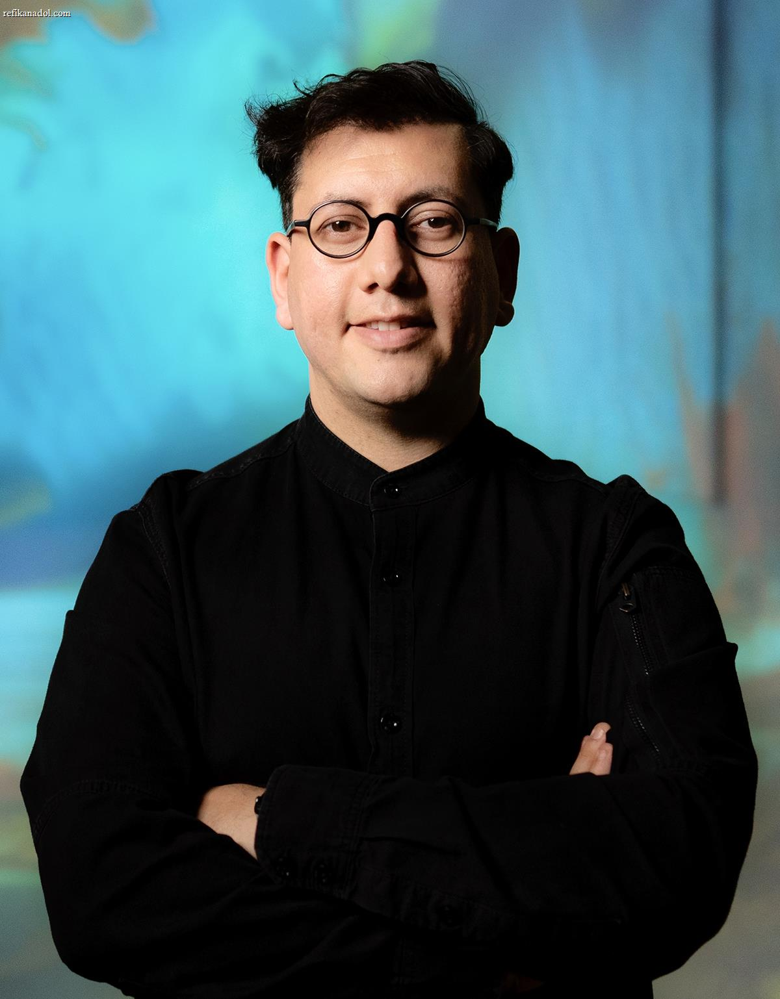

—
Press and Interview requests:
press@refikanadolstudio.com
—
Refik Anadol Studio, LLC
Los Angeles, California, USA

Refik Anadol’s work locates creativity at the intersection of humans and machines. Taking the data that surrounds us as primary material, and the neural network of a computerized mind as a collaborator, Anadol offers us radical visualizations of our digitized memories and expands the possibilities of interdisciplinary arts. Anadol’s AI data paintings and sculptures, live audio/visual performances, and immersive installations take many forms, while encouraging us to rethink our engagement with the physical world, public art, decentralized networks, and the creative potential of AI. Entire buildings come to life. Floors, walls, and ceilings disappear into infinity. Breathtaking aesthetics take shape from large swaths of data, and what was once invisible to the human eye becomes visible, offering the audience a new perspective on, and narrative of their environments.
The primary thread that runs throughout Anadol’s groundbreaking visualizations is the unseen world of data. For Unsupervised at the Museum of Modern Art, New York, Anadol posed an alternate understanding of modern art by transforming the metadata of MoMA’s vast collection into a work that continuously generates new forms in real-time. For Quantum Memories at the National Gallery of Victoria, 200 million photos of Earth and its landscapes, oceans and atmosphere were used to visualize an alternate reality of nature. Archival photographic data of our universe from the archives of NASA/JPL was the driving force behind Machine Memoirs: Space, Istanbul’s most visited exhibition ever. Machine Hallucination: NYC harnessed 113 million publicly available images of New York City to envision the near future of a storied city. For WDCH Dreams, 100 years of the Los Angeles Philharmonic’s digital archives were tapped to inspire the visuals projected onto Frank Gehry’s iconic building. For Melting Memories, Anadol explored the materiality of remembering by transforming EEG data—capturing neural activity associated with memory recall—into data paintings, augmented data sculptures, and light projections, offering new insights into the representational possibilities emerging from the intersection of advanced technology and contemporary art. At Serpentine Galleries in London, Anadol’s Echoes of the Earth: Living Archive featured works Artificial Realities: Rainforest and Artificial Realities: Coral, that utilized the Large Nature Model (LNM), an AI model developed by Refik Anadol Studio and trained on approximately 135 million images of nature and extensive datasets of flora, fungi, and fauna from over 16 rainforest locations globally. For the Intuit Dome in Los Angeles, Anadol’s Living Arena transformed diverse data sources—including live weather and flight information, Clippers’ historic player tracking, and images of California’s national parks—into a multi-channel aesthetic experience presented on a monumental LED screen. At the Guggenheim Museum Bilbao, Anadol’s Living Architecture: Gehry utilized the Large Architecture Model (LAM), a custom-built AI model trained over several months on a vast archive of open-access imagery, sketches, and blueprints from Frank Gehry’s works. This AI-driven system transformed the architect’s signature forms into vibrant AI Data Sculptures.
Refik Anadol ’s global projects have received a number of awards and prizes including TIME100 AI Impact Award, UCLA’s 2024 Edward A. Dickinson Alumnus of the Year Award, the Lorenzo il Magnifico Lifetime Achievement Award for New Media Art, Microsoft Research’s Best Vision Award, iF Gold Award, D&AD Pencil Award, German Design Award, UCLA Art+Architecture Moss Award, Columbia University’s Breakthrough in Storytelling Award, University of California Institute for Research in the Arts Award, SEGD Global Design Award, LOOP Design Award and Google’s Artists and Machine Intelligence Artist Residency Award.
Anadol’s works have been featured at iconic landmarks, museums, galleries and festivals worldwide, such as MoMA, Centre Pompidou-Metz, Serpentine Galleries, Guggenheim Museum Bilbao, Pinakothek der Moderne, EMMA Museum, Art Basel, Haus der elektronischen Künste, Kunsthalle Praha, Arken Museum, Palazzo Strozzi, Casa Batlló, National Gallery of Victoria, Museum of the Future Dubai, Walt Disney Concert Hall, World Economic Forum, Venice Architecture Biennale – La Biennale di Venezia, Hammer Museum, Jeffrey Deitch, Dongdaemun Design Plaza, Kunsthal Rotterdam, Daejeon Museum of Art, Florence Biennale, OFFF Festival, International Digital Arts Biennial Montreal, Ars Electronica Festival, The Sphere, The Kennedy Center, Intuit Dome, Arc De Triomf, Istanbul Modern, Contemporary Art Center, Istanbul Design Biennial, and ZKM | Center for Art and New Media, among many others.
Refik Anadol Studio has been a pioneering force in the realm of blockchain-based media art, consistently exploring the intersection of advanced technology, data aesthetics, and digital ownership. Since launching its first digital collectible in 2021, the studio has released over a dozen NFT collections that extend its data-driven visual language into the Web3 space. Early landmark projects include Machine Hallucinations – Space: Metaverse, presented in collaboration with Sotheby’s, which introduced the first immersive NFT in conjunction with a physical exhibition in Hong Kong. In a historic moment, Living Architecture: Casa Batlló—inspired by Antoni Gaudí’s iconic building—became the studio’s first artwork auctioned by Christie’s and the only NFT included in the 21st Century Evening Sale, standing alongside physical works by artists such as Banksy and Jeff Koons. Displayed at Rockefeller Plaza and simultaneously projected onto Casa Batlló’s façade in Barcelona, the project was seen by over 50,000 spectators and set new benchmarks for digital art visibility and cultural impact. Beyond technological innovation, Anadol’s NFT practice has consistently championed social impact. To date, Refik Anadol Studio has raised over $10 million through NFT sales for charitable organizations including St. Jude Children’s Research Hospital, the Alzheimer’s Foundation, and UNICEF. In 2023, the Winds of Yawanawá NFT collection, created in close collaboration with the Yawanawá community of the Amazon, raised $3 million to support Indigenous cultural and environmental preservation and build the first museum in Amazonia. Biome Lumina, Dataland’s founding digital collection created by Refik Anadol Studio, is a series of 1,000 unique living paintings on the blockchain, inviting collectors into a dynamic exchange via a generative AI interface and immersive soundscapes based on live atmospheric and ecological conditions.
A pioneer in his field, and the first to use artificial intelligence in a public artwork, Anadol has partnered with teams at Google, NVIDIA, Microsoft, Apple, Intel, IBM, NASA/JPL, Siemens, Epson, MIT, UCLA, Harvard University, Imperial College, Stanford University, and UCSF, to apply the latest, cutting-edge technology, science and research to his work.
2025 —
- Machine Dreams : Biophilia, Google Bay View Campus Gradient Canopy, Mountain View, USA
- Machine Hallucinations: Large Nature Model, Doncaster Light Festival, Doncaster, UK
- Virtual Paths, 8497 Sunset, Los Angeles, USA
- Large Nature Model : Türkiye – Flora, İş Bankası Painting & Sculpture Museum, Istanbul, Turkey
- Infinito: AI Data Sculpture, Bvlgari Infinito Exhibition, NMACC, India
- Living Architecture: 270 Park, JP Morgan Chase HQ, New York City, USA
- Artificial Realities: New York City, Columbia Business School, New York City, USA
- Living Memory : Messi – A Goal in Life, Christie’s, New York City, USA
- Infinito: AI Data Sculpture, Bvlgari Infinito Exhibition, Futura, Seoul
- Winds of Yawanawa: AI Data Sculpture, Yawanawa Sacred Village, Acre, Brazil
- Living Architecture: Ghery, In situ: Refik Anadol, Guggenheim Bilbao, Bilbao, Spain
- Earth Dreams, Museum of the Future House at SXSW 2025, Austin, USA
- Large Nature Model: Coral, AI Action Summit, Grand Palais, Paris, France
- Glacier Hallucinations, World Economic Forum, Davos, Switzerland
- Glacier Dreams, Kusthaus Zurich, Zurich, Switzerland
- Infinito: AI Data Sculpture, Bvlgari Infinito Exhibition, Zhang Yuan, Shanghai, China
2024 —
- Living Archive : Echoes of the Earth, Futura Seoul, Seoul, South Korea
- Rumi Dreams : AI Data Sculpture, Center for Modern and Contemporary Art, Deberecen, Hungary
- Gaudí Dreams : AI Data Sculpture, Casa Batlló, Barcelona, Spain
- Inner Portraits : AI Data Sculpture, Art Basel, Basel, Switzerland
- Dvorak Dreams, Kennedy Center, Washington, DC, USA
- Echoes of the Earth : Living Archive, Serpentine Galleries, London, UK
- Living Arena, Intuit Dome, Inglewood, CA, USA
- Winds of Yawanawa : AI Data Sculpture, PIP Seoul, Korea
- Machine Hallucinations – LNM, Google I/O, Mountain View, CA, USA
- Large Nature Model : Living Art, NVIDIA GTC, San Jose, CA, USA
- Living Archive : Echoes of the Earth, Serpentine, London, UK
- Winds of Yawanawa : AI Data Sculpture, World Economic Forum, Davos, Switzerland
- Living Paintings : Nature, Kunsthal Rotterdam, Rotterdam, The Netherlands
- Natural Paintings, Kanazawa 21st Contemporary Art Museum, Japan
2023 —
- Machine Hallucinations : Sphere, The Sphere, Las Vegas, USA
- Unsupervised – MoMA, Museum of Modern Art, New York City, NY, USA
- Machine Hallucinations – Nature Dreams, SFMoMA, Google Cloud Next, San Francisco, USA
- Dvorak Dreams, Rudolfinum, Prague, Czech Republic
- Sense of Healing : AI Data Sculpture, Seoul, Korea
- Machine Hallucinations – Nature Dreams, Google Camp, Sicily, Italy
- Winds of Yawanawa : AI Data Sculpture, Mykonos, Greece
- Bosphorus – AI Data Sculpture, Istanbul Modern, Istanbul, Turkey
- Unseen Intelligence, Midtown Tokyo, Tokyo, Japan
- Neural Paintings, Jeffrey Deitch Gallery, Art Basel, Basel, Switzerland
- Mumbai Dreams, JIO World Center, Mumbai, India
- Glacier Dreams, Art Basel, Basel, Switzerland
- Ipotesi Metaverso, Palazzo Cipolla, Rome, Italy
- Machine Hallucinations – Nature Dreams, ARKEN Museum of Modern Art, Copenhagen, Denmark
- The Nature Series, Moco Museum, Barcelona, Spain
- Artificial Realities : Coral, World Economic Forum, Davos, Switzerland
- Glacier Dreams, ArtScience Museum, Singapore
- Metamorphosis – Immersive AI Data Sculpture, New York City, NY, USA
- Living Paintings, Jeffrey Deitch Gallery, Los Angeles, CA, USA
- Glacier Dreams, Art Dubai, Dubai, UAE
- Machine Dreams – Riyadh, JAX, Riyadh, Saudi Arabia
- Metamorphosis, Thyssen-Bornemisza National Museum Madrid, Spain
2022 —
- Unsupervised – MoMA, Museum of Modern Art, New York City, NY,USA
- Machine Hallucinations Nature Dreams – AI Data Sculpture, EMMA Museum of Modern Art, Espoo, Finland
- Alcazar Dreams – Immersive AI Data Sculpture, HOPE Alkazar, Istanbul, Turkey
- Tree of Life – Realtime AI AV Performance, Zorlu PSM, Istanbul, Turkey
- Serpenti Metamorphisis – Immersive AI Data Sculpture, Saatchi Gallery, London, UK
- Unfinished – Dreams / Stable Diffusion, The Shed, New York City, NY,USA
- Pinakothek Dreams – AI Data Sculpture, Pinakothek der Moderne, Munich, Germany
- Gagosian and Jeffrey Deitch – 100 Years Exhibition, Miami, Florida, USA
- Sense of Healing – AI Data Sculpture, UNICEF Gala, Capri, Italy
- Quantum Memories – Haus der elektronischen Künste – HEK, Basel, Switzerland
- Sense of Healing – AI Data Sculpture, AURORA, St. Tropez, France
- Architecting The Metaverse – Zaha Hadid Architects – DDP, Seoul, Korea
- Living Architecture – Casa Batlló, Barcelona, Spain
- Rumi Dreams – AI Data Sculpture, Ataturk Culture Center, Istanbul, Turkey
- Machine Hallucinations – Renaissance Dreams, Palazzo Strozzi, Florence, Italy
- Quantum Memories, SOMA Onassis Exhibition, Athens, Greece
- Bosphorus – AI Data Sculpture, Brixen Light Festival, Germany
- Infinity Room, Kinetismus: 100 Years of Electricity at Kunsthalle – Praha. Prague, Czech Republic
- Beethoven – Missa Solemnis – Philadelphia Orchestra, Philadelphia, PA, USA
- Machine Memoirs : Space, Eternal Artspace (MUTEK) – Tokyo, Japan
- Ligeti – Paradigms, San Francisco Symphony, San Francisco, CA, USA
- Machine Memoirs : Space, Coventry, UK
- Industrial Dreams – Futur21, Henrichshütte Hattingen, Hattingen, Germany
2021 —
- Unsupervised – Machine Hallucinations – MoMA, NFT Exhibition on FeralFile
- Machine Hallucinations – Space Dreams, World Conference on Creative Economy, Dubai, UAE
- Machine Hallucinations – Coral Dreams, Art Basel Miami, Faena Beach, Florida, US
- Black Sea : Data Sculpture- Hyper Perspective: Technology + Art Exhibition, Qingdao, China
- Space : Data Tunnel, Art for the Future Biennale, Multimedia Art Museum, Moscow, Russia
- Serpenti – Metamorphosis – Milan, Italy
- Quantum Memories – SemiPermanent – Abu Dhabi, UAE
- Black Sea : Data Sculpture, Hyper Perspective: Technology + Art Exhibition, Qingdao, China
- Renaissance Dreams – 180 The Strand, London, UK
- Machine Hallucinations – NYC – Unfinished, Project Liberty, New York, USA
- Sense of Space Connectome + Molecular Architecture – Venice Architecture Biennale, Venice, Italy
- Seeing the Invisible – AR Exhibition, Global
- Pioneer Tower Dreams – Public Art for Fort Worth, Texas, USA
- In the Mind of Gaudí – Casa Batlló, Barcelona, Spain
- Quantum – bitforms Gallery, New York City, New York, USA
- Sense of Heritage – Hennessy HQ, Cognac, France
- ISS Dreams – Resonant Media – Possibilities of 8K Visualization – Ars Electronica + NHK, Tokyo, Japan
- Renaissance Dreams – M.E.E.T, Milano, Italy
- Machine Memoirs : Space, Pilevneli Gallery, Istanbul, Turkey
- Machine Hallucinations : NVIDIA GTC AI Art Gallery, NVIDIA GTC 2021, Virtual
- Seoul Haemong II, DDP Building, Seoul, Korea
2020 —
- Quantum Memories – National Gallery of Victoria 2020 Triennial, Melbourne, Australia
- Metamorphosis Returns – Machine Hallucinations, Seoul, Korea
- Distant Arcades – Machine Hallucinations – Nature Dreams, MUTEK, Montreal, Canada
- Melting Memories – Engram, Images Vevey Art Festival, Switzerland
- Machine Hallucinations : NVIDIA GTC AI Art Gallery, NVIDIA GTC 2020, Virtual
- Melting Memories – Engram, Taipei Digital Art Festival,Taipei, Taiwan
- Machine Hallucinations – Nature Dreams, Beyond Film Festival, Karlsruhe, Germany
- Digital Dreams, Kurhaus, Baden-Baden, Germany
- NEAR + FUTURES + QUASI + WORLDS, STATE Studio, Berlin, Germany
- Melting Memories – Engram, Sørlandets Kunstmuseum, Norway
- Melting Memories – Engram, Neurones, Centre Pompidou, Paris, France
- Infinite Space, Artechouse, Miami, FL, USA
2019 —
- Machine Hallucinations – Earth ISS, SIGGRAPH Asia 2019, Brisbane, Australia
- Winds of Shenzhen, 40 Years of Humanizing Technology – Ars Electronica, Shenzhen, China
- Machine Hallucinations – Earth ISS, IEEE Visap 2019, Vancouver, Canada
- Bosphorus, les Garages Numériques, Brussels, Belgium
- Melting Memories, Open Codes, Azkuna Zentroa, Spain
- Infinity Room, Daejeon Museum of Arts, Daejeon, South Korea
- Machine Hallucinations – Mars, AS-Helix, National Museum of China, Beijing, China
- Archive Dreaming, AS-Helix, National Museum of China, Beijing, China
- Neuro Space, Society of Neuroscience, Chicago, IL, USA
- Bopshorus, Les Garages Numeriques, Brussels, Belgium
- Melting Memories, Volvo Art Session, Zürich, Switzerland
- Infinity Room, Volvo Art Session, Zürich, Switzerland
- Melting Memories, Florence Biennale, Florence, Italy
- Infinite Space, Artechouse, Miami, FL, USA
- Machine Hallucination, Artechouse, New York City, NY, USA
- Latent History, Fotografiska, Stockholm, Sweden
- Infinite Space, Artechouse, Washington, DC, USA
- Macau Currents: Data Paintings, Art Macao: International Art Exhibition, Macao
- Archive Dreaming, Symbiosis – Asia Digital Art Exhibition, Beijing, China
- Machine Hallucination – Study II, Hermitage Museum, Moscow, RUS
- Memoirs from Latent Space, New Human Agenda, Akbank Sanat, Istanbul, Turkey
- Melting Memories – Engram – LEV Festival, Gijón, Spain
- Machine Hallucination – Study I, Bitforms Gallery, Los Angeles, CA, USA
- Infinity Room – Dataland, ZKM, Karlsruhe, Germany
- Bosphorus, Pilevneli Gallery, Istanbul, Turkey
- Infinity Room – Dataland, Wood Street Gallery, Pittsburgh, PA, USA
2018 —
- Melting Memories, Species and Beyond, Kikk Festival, Belgium
- WDCH Dreams, Walt Disney Concert Hall, Los Angeles, CA, USA
- Melting Memories, Open Codes, ZKM, Karlsruhe, Germany
- Melting Memories, Pilevneli Gallery, Istanbul, Turkey
- Infinity Room / New Edition, New Zealand Festival, Wellington, New Zealand
- Virtual Archive, SALT Galata, Istanbul, Turkey
- Liminality V1.0, International Art Projects, Hildesheim, Germany
- Infinity Room / New Edition, Kaneko Museum, Omaha, Nebraska
- The Invisible Body : Data Paintings, Sven-Harrys Museum, Stockholm, Sweden
- Data Sculpture Series, Art Center Nabi, Seoul, South Korea
- 1-2-3 Data Exhibition, Paris, EDF, France
- Infinity Room, Scottsdale Museum of Contemporary Art, Arizona, USA
- Infinity Room, Exploratorium, San Francisco, CA, USA
2017 —
- Infinity Room / New Edition, MeConvention, Frankfurt, Germany
- Archive Dreaming, Ars Electronica, Linz, Austria
- Wind of Linz, Ars Electronica, Linz, Austria
- Infinity Room / New Edition, Beijing, China
- Archive Dreaming, SALT Galata, Istanbul, Turkey
- Infinity Room / New Edition, Athens, Greece
- Heterotopia, Istanbul, Turkey
- Infinity Room / New Edition, SXSW, Austin, TX
2016 —
- Warhol X Anadol, Young Projects, Los Angeles, USA
- Radical Atoms, Ars Electronica – Computer Animation Festival, Linz, Austria
- Infinity Room, The Conference, Malmö, Sweden
- Infinity Room, TAG Festival, Mexico City, Mexico
- MultipliCITY – Victor Vasarely, Fondation Vasarely, Paris, France
- Cavity InfoComm, Las Vegas, Nevada, USA
- Infinity Room Mapping Festival, Geneva, Switzerland
- Infinity Room VIA Festival, Paris, France
- Infinity Room EXIT Festival, Paris, France
2015 —
- Infinity Room Day For Night, Houston, Texas, USA
- Cavity Monochrome, Akbank Sanat, Istanbul, Turkey
- Liminal Room Istanbul Light Festival, Istanbul, Turkey
- SIGGRAPH ASIA 2015 Art Gallery, Kobe, Japan
- Expected Port City Talks / Istanbul-Antwerp, Europalia, Antwerp, Belgium
- Wavelengths Digital Turkey Exhibition, Europalia, Antwerp, Belgium
- Infinity Room Artnivo, Istanbul Biennial, Istanbul, Turkey
- SIGGRAPH 2015 : Electronic Theatre, Los Angeles, USA
- Ars Electronica – Computer Animation Festival, Linz, Austria
- The New Creativity: Man and Machines, MAK, Los Angeles, USA
- Digital Couture / Epson, Industria SuperStudio, New York, USA
- Waves, Blok Art Space, Istanbul, Turkey
2014 —
- Cavity, RH Contemporary Art Gallery, New York, USA
- Algo-Rhythms, Sonos-Studio, Los Angeles, USA
- Adobe Creative Cloud Mosaic Project, New York, USA
- UCLA DMA Media Arts MFA Exhibition, New Wight Gallery, Los Angeles, USA
- Presentism: Light as Material, Young Projects, Los Angeles, USA
- VitrA Contemporary Architecture Series: Dreams to Reaalities Istanbul Modern, Istanbul
2013 —
- Parallel Threads, Ekavart Gallery, Istanbul, Turkey
- Prefix, Media Arts MFA Exhibition, New Wight Gallery, Los Angeles, USA
- Incidence, UCLA DMA MFA Group Show, Design Matters Gallery, Los Angeles, USA
- The Active Apparatus and Liminal Landscapes, Young Projects, Los Angeles, USA
2012 —
- Istanbul Design Biennial, istanbulmodern, Istanbul, Turkey
- Sceptical Interventions, Pilevneli Projects, Istanbul, Turkey
- Istanbul Summer Exhibition, Antrepo 5, Sanat Limani, Istanbul
2011 —
- Minus Feld, American Hospital, “Operation Room”, Istanbul
2010 —
- Human Landscapes, Goethe Institut&Contretype, Brussels, Belgium
- Spagat, Marta Herford Museum, Herford, Germany
- Untitled II, ULG, Liége, Belgium
- Track 09, ÇSM – santralistanbul, Istanbul
2009 —
- Untitled, Galeri 1 – santralistanbul, Istanbul
- Academy Meets Photokina, Photokina, Köln, Germany
2008 —
- Track 08, Contemporary Art Center – santralistanbul, Istanbul, Turkey
- 2025 —
-
- Opening Ceremony of WEF 2025: AI Data Sculpture, World Economic Forum, Davos, Switzerland
- Winds of Yawanawa : AI Data Sculpture, Yawanawa Sacred Village, Acre, Brazil
- Large Nature Model : Coral, Paris AI Action Summit, Grand Palais, Paris, France
-
- 2024 —
-
- Echoes of the Earth : Living Archive, Futura Seoul, Korea
- Large Nature Model : Living Art, NVIDIA GTC, San Jose, CA, USA
- Living Archive : Nature, World Economic Forum Opening, Davos, Switzerland
- Echoes of the Earth : Living Archive, Serpentine Galleries, London, UK
2023 —
-
-
- Living Architecture – Casa Batlló, Barcelona, Spain
- Data Portal : Nature, COP 28, Dubai, UAE
- Glacier Dreams – Art Basel, Basel, Switzerland
- Living Paintings, Jeffrey Deitch Gallery, Los Angeles, CA, USA
- In the Mind of Gaudí – Casa Batlló, Barcelona, Spain
-
2022 —
-
-
- Living Architecture – Casa Batlló, Barcelona, Spain
- Tree of Life – Realtime AI AV Performance, Zorlu PSM, Istanbul, Turkey
- Beethoven – Missa Solemnis – Philadelphia Orchestra, Philadelphia, PA, USA
- Ligeti – Paradigms, San Francisco Symphony, San Francisco, CA, USA
- Machine Memoirs : Space, Coventry, UK
-
2021 —
-
-
- Sense of Space – Venice Architecture Biennale, Venice, Italy
- In the Mind of Gaudí – Casa Batlló, Barcelona, Spain
- Pioneer Tower Dreams – Public Art for Fort Worth, Texas, USA
- Sense of Heritage – Hennessy HQ, Cognac, France
- Machine Memoirs : Space, Pilevneli Gallery, Istanbul, Turkey
-
2020 —
-
-
- Machine Hallucinations – Nature Dreams, Beyond Film Festival, Karlsruhe, Germany
-
2019 —
-
-
- Seoul Haemong, DDP, Seoul, Korea
- Latent Being, Kraftwerk, Berlin Germany
- Machine Hallucination, Artechouse NYC, New York City, USA
-
2018 —
-
-
- WDCH Dreams, Walt Disney Concert Hall, Los Angeles, CA, USA
- Schumann’s Das Paradies und Peri, Walt Disney Concert Hall, Los Angeles, CA, USA
- Melting Memories, Pilevneli Gallery, Istanbul, Turkey
-
2017 —
-
-
- Infinity Room / New Edition, MeConvention, Frankfurt, Germany
- Archive Dreaming, Ars Electronica, Linz, Austria
- Infinity Room / New Edition, Beijing, China
- E/Space, Santa Monica, CA, USA
-
2016 —
-
-
- Data Cloth Broad Art Center, Los Angeles, USA
- Cavity InfoComm 2016, Las Vegas, Nevada, USA
-
2015 —
-
-
- Infinity Room Day For Night, Houston, Texas, USA
- Liminal Eoom Istanbul Light Festival, Istanbul, Turkey
- Erik Satie’s Vexations UCLA Ostin Rehearsal Room, Los Angeles, USA
- Infinity Room Artnivo, Istanbul, Turkey
-
2014 —
-
-
- Visions of America: Amériques LA Phil, Walt Disney Concert Hall, LA, USA
- Tree of Life, Hammer Museum, Los Angeles, USA
- Algo-Rhythms, Sonos-Studio, Los Angeles, USA
- The Aether Project, IDEAS, Los Angeles, USA
-
2013 —
-
-
- Semaphore, LichtRouten, Lüdenscheid, Germany
- Liminality, Temporary Immersive Environments, Los Angeles, USA
-
2012 —
-
-
- Peripheral, Temporary Immersive Environments, Los Angeles, USA
- Highlights, Urban Prototyping:SF, San Francisco, USA
- Augmented Structures v2.0, Istanbul Design Biennial, Istanbul, Turkey
- Epiphaneia, Montreal Design Biennial, Montreal, Canada
- Legorreta Alive, SantaFe Art and Design Universty, New Mexico, USA
-
2011 —
-
-
- Augmented Structures v1.0, Yapı Kredi Kültür ve Sanat Merkezi, Istanbul, Turkey
- Arc de Triomf, Barcelona, Spain
- Cerha Momentum, Ars Electronica Festival, Linz, Austria
-
2010 —
-
-
- MRO, Tabakfabrik – Ars Electronica Festival, Linz, Austria
- Quadrangle, Zollverein – Ruhr
- European Capital of Culture, Essen, Germany
-
2009 —
-
- Quadrature, Contemporary Art Center – santralistanbul, Istanbul, Turkey
-
2025 —
-
-
- Digital Art Conversations by LACMA, Miami, USA
- Ctrl+S Culture : Virtual Conference Online, ICCROM, Online
- 2025 Venice Architecture Biennale Conference, Venice, Italy
- Allen Hour: Refik Anadol, Allen Institute, Seattle , USA
- DREAMFORCE: Merging Art, Data, and AI, Seattle, USA
- TIME100 AI Impact Dinner, TIME, San Francisco, USA
- Shared Futures: AI Forum, Aspen Institute, Washington, D.C., USA
- Summit Detroit, Detroit, USA
- LAMAA Inauguration, The Getty, Los Angeles, USA
- Culture Summit 2025: Culture for Humanity and Beyond, Abu Dhabi, UAE
- Digital Art Conversations X LACMA, Los Angeles, USA
- The Akademy Circle Dubai, Dubai, UAE
- World Governments Summit, Dubai, UAE
- Artificial Intelligence Action Summit, France, Paris
-
2024 —
-
-
- The Future of Public Art – Noor Riyadh Public Talk, Riyadh, Saudi Arabia
- The Future of Curation: How Must We Adapt to Engage Diverse Audiences in the World of Tomorrow? – Dubai Future Forum 2024, Dubai, UAE
- The Intersection of Nature, Science, and AI ArtSynopsis – Lecture, Novartis Campus, Basel, Switzerland
- Keynote, 2024 Monterey Design Conference by American Institute of Architects, Monterey, USA
- Pushing Creative Boundaries: AI as a Partner in Art – Miro Canvas ’24, New York, USA Keynote, Canvas 24 organized by Miro, New York, USA
- Embracing AI and Blockchain As an Artist – PIP Seoul, Seoul, South Korea
- Art and Technology – Christie’s 8th Art+Tech Summit, New York, USA
- The Intersection of Art and Technology: Refik Anadol and Meredith Black, Config 2024 by Figma, San Francisco, USA
- Digital Dialogues – Art Basel, Basel, Switzerland
- Dialectic Summer Jam – Novartis Campus, Basel, Switzerland
- Art and Science Talks – Zurich Art Week, Zurich, Switzerland
- A new renaissance in art: Refik Anadol on the AI transformation of art, Google IO, Mountain View, USA
- Serpentine In Conversation : Refik Anadol with Mira Lane and Doug Eck, Moderated by Kay Watson, Goethe Institute, London, UK
- Art in The Age of AI with Bennet Miller, CAA, Los Angeles, USA
- Artist Talk at Kunsthal Rotterdam – Living Paintings : Nature – Rotterdam, The Netherlands
- STEAM Symposium – Keynote, Long Beach, USA
-
2023 —
-
-
- How AI art could enhance humanity’s collective memory – TED Talk, Vancouver, Canada
- World Economic Forum – Generative AI Panel / Keynote, Davos, Switzerland
- Generative AI : Shaping the Future Opening Lecture, MIT, Massachusetts, USA
- Lecture – Harvard Graduate School of Design, MIT, Massachusetts, USA
- Painting with AI with a Thinking Brush – Penny Stamp Series, University of Michigan, Detroit, USA
- Artist Talk, Domus Academy, Milan, Italy
- Creating AI Art with a Thinking Brush, PhotoVogue, Milan, Italy
- Getty, State of the Arts, Los Angeles, USA
- Neural Net Aesthetics – Panel, New Museum, New York, USA
- AI and the Arts – Panel, Jeffrey Deitch Gallery, Los Angeles, USA
- World Economic Forum – Cultural Leaders as a Catalyst of Change with Refik Anadol / Keynote, Davos, Switzerland
- Machine Hallucinations – AI Research of RAS at Google, Keynote, San Francisco, USA
-
2022 —
-
-
- Lecture at MIT Media Lab – Hiroshi Ishii’s Tangible Media Group
- Design Emergency with Paola Antonelli
- Mental Health Forum, Therme Art + AURORA Institution, St. Tropez, France
- OFFF Festival, Barcelona, Spain
- ISE Opening Keynote, Exploring the Heritage of Tomorrow, Barcelona, Spain
- MIT Technology Review, EmTech Digital, MIT, Boston, MI, USA
- MoMA – Unsupervised AI and Arts, NVIDIA GTC 2022, Virtual
-
2021 —
-
-
- Space In The Mind of a Machine, SemiPermanent Middle East, Abu Dhabi, UAE
- The Aesthetics of Probability, Google Quantum Summer Symposium 2021, Virtual
- National Endowment for the Arts, Tech As Art Symposium, 2021, Virtual
- Humanity and Artificial Intelligence, SNF Nostos Conference, 2021, Athens, Greece
- Space In the Mind of a Machine Guest Lecture at Hamburg University of Applied Sciences // aiXdesign, 2021 Virtual
- International Symposium on Machine Learning at Arts, 2021, City University of Hong Kong
- Q6 Quantum Symposium, 2021, The University of Sydney, Australia
- Breaking Glass Symposium, Städelschule Architecture, Frankfurt, Germany
- Sense of SpaceAI, Neuroscience and Architecture, NVIDIA GTC 2021, Virtual
- Human-AI Co-Creation with Generative Models, IBM, Virtual
- Space In the Mind of a Machine, Fowler Museum Online Studio Tour, Los Angeles, CA
- Nature Dreams, Beyond Film Festival – Online – Lecture, Karlsruhe, Germany
-
2020 —
-
-
- Art In the Age of Machine Intelligence, Architectural Association School of Architecture, London, UK
- Space In the Mind of a Machine, TED Talk 2020, Virtual Main Stage
- Closing the Gap – Dutch Design Week 2020, Amsterdam, Netherland
- World Intellectual Property Organization (WIPO) – AI Lab, Geneva, Switzerland
- Synesthetic Architecture, Ars Electronica Festival – STARTS, Linz, Austria
- Space In the Mind of a Machine, Architecture, Technology, Innovation Symposium,Turkey
- Space In the Mind of a Machine, Fowler Museum Online Studio Tour, Los Angeles, CA
- Nature Dreams, Beyond Film Festival – Online – Lecture, Karlsruhe, Germany
- Space In the Mind of a Machine, MIT Media Lab City Science, Online – Lecture
-
2019 —
-
-
- Machine Hallucinations – Earth ISS, SIGGRAPH Asia 2019, Brisbane, Australia
- Machine Hallucinations – Earth ISS, IEEE Visap 2019, Vancouver, Canada
- Space In The Mind of a Machine – UC Berkeley – Keynote
- EYEO Festival – Space In The Mind of a Machine – Minneapolis – Keynote
- Innovation Week Turkey 2019 – Turkey – Keynote
- OFFF Festival – Barcelona, Spain – Lecture
- Melbourne Design Week – The Minds Eye – NGV – Melbourne – Lecture
- Multi-sensory Science, Art & Technology, UCLA Neuroscience Department – Los Angeles – Lecture
- Brutally Early Breakfast – Hans Ulrich Orbist & Klaus Biesenbach – MOCA – Los Angeles – Talk
- Art and AI – FriezeLA – Los Angeles – Lecture
-
2018 —
-
-
- GeorgiaTech – Digital Building Lab Symposium – Lecture
- American Alliance of Museums – Museum AI –Lecture
- The Poetics of Data – Charlotte ASC – Lecture
- Knowledge Capital, Osaka – Lecture
- AIA Virginia – Speaker
- Microsoft Research – Speaker
- Emergent Visions / Nanyang Technology University – Lecture
- Harvard School of Graduate Design – Lecture
-
2017 —
-
-
- Digi.logue Future Tellers – Speaker
- Ars Electronica / AI Panel – Lecture
- Google AMI – Speaker
- USC – Praxis – Speaker
- Microsoft Research – Speaker
- G-Tech – Speaker
- INST-INT, Speaker
-
2016 —
-
-
- CalARTS Visiting Lecture Series, Lecture
- CalARTS Visiting Lecture Series, Lecture
- SEGD X Lab NYC, Lecture
- The Conference Generative Design, Lecture
- Microsoft Windows Design Group, Lecture
- Strelka Institute, Lecture
- Digital Hollywood Music 2020, Lecture
- Digi.logue Discovery and Innovations in New Media and Art, Lecture
- Resonate, Lecture
- Perspectives: The Design Fusion of Art and Architecture, Panel
- Art and Machine Learning Symposium, Gray Area / Google, Talk
- Microsoft Research, Social Computing Symposium, NYU / ITP, Talk
-
2015 —
-
-
- BEYOND MUSIC: Composition and Performance in the Age of Augmented Reality, Lecture
- USC Interactive Media Forum, Lecture
- Resonate, Lecture
- NODE15, Talk + Lecture
- Loyola Marymount University, Talk + Lecture
-
2014 —
-
-
- Microsoft Research Social Computing Symposium, Talk + Lecture
- UCLA IDEAS, Talk + Lecture
-
2013 —
-
-
- Microsoft Research, Design Summit, Talk
-
2012 —
-
-
- UCLA Design Media Arts, Talk
-
2010 —
-
- ISEA 2010, Talk
2025 —
- Google Arts & Culture – Review
- The Node Institute – Review
- The Observer – Feature
- Los Angeles Times – News
- CBS Sunday Morning – Feature
- CoinDesk – Feature
- Room and Wild – Feature
- TIME – Feature
- The Art Newspaper – News
- NY1 – News
- NY Times – News
- Artnet – News
- TimeOut – News
- AP News – News
- FT Chinese – News
- National Geographic – Feature
- ESPN – News
- WIRED CZ – News
- Hypebeast – News
- Artsy – News
- Secret Los Angeles – Feature
- Artnews – News
- MEER Art – Review
- ARTNews – Review
- LesEchos – Review
- My Modern Met – Review
- Designboom – Review
- Forbes – Feature
- The Art Newspaper – Feature
- Rolling Stone Italia – Feature
- El Mundo – Review
- EFE – News
- Deia – News
- Financial Times – Interview
- Time100 – Interview
- Time100 – Review
- The Art Newspaper – Review
- Artnet – Interview
2024 —
- Art Review – Power 100
- Meta– Review
- The Washington Post – Review
- The Art Newspaper – Review
- Turkiye Today – News
- Tatler – Review
- New York Times – Interview
- ARTnews – Review
- Freethink – Review
- El Pais – Feature
- Contemporary Art Issue – Review
- The Art Newspaper – Interview
- My Modern Met – Feature
- CNBC – Feature
- Culture Weekly – Feature
- Financial Times – Review
- It’s Nice That – Feature
- The Economist – Review
- Forbes – Review
- Designboom – Feature
- World Economic Forum – Review
- Artnet – Review
- Creative Review – Feature
- BNN – Feature
- Voice of America – Feature
- NBC News – Feature
- Designboom – Feature
- Artnet – Feature
2023 —
- Artsy – Feature
- The Moodie Davitt Report – Feature
- Decrypt – Interview
- Art Review – Feature
- Google Blog – Conversation
- OBSERVER – Feature
- Louisiana Channel
- ARTnews – Feature
- Art Forum – News
- OBSERVER – News
- Decrypt – News
- Archinect – Review
- Foster and Partners – Feature
- NFT Culture – News
- NFT Now – News
- ARTnews – News
- WBUR – Feature
- My Modern Met – Feature
- Fast & Company – Feature
- CULTURED – Feature
- SURFACE – Feature
- Fast & Company – Review
- CNN – Feature
- Los Angeles Times – Feature
- CNN Business – Interview
- Designboom – Feature
- Artnet – Review
- MoMA Magazine – News
- Dezeen – Interview
- Artnet – Feature
- MoMa Magazine – Feature
- ArtNews – Review
- Artnet – Review
- Deep Learning: AI, Art History, and the Museum – MoMA Magazine – Interview
- Artnet – Interview
- Artnet – Interview
- The Art Newspaper – Feature
- Artnet – Feature
- Artnet – Interview
- Art Blog – Feature
- The Robb Report – Interview
- How to See like a Machine – MoMA Magazine – Interview
- CNN – Interview
- PBS News Hour – Interview
- Wallpaper – Feature
- Artnet – Feature
- Los Angeles Times – Interview
- ArtNews – Feature
- Hollywood Reporter – Feature
- Artsy – Feature
- Washington Post – Feature
- Cultured – Interview/Feature
- Surface Magazine – Feature
- Archinect – Feature
- Hyperallergic – Feature
- Artnet – Feature
- The Art Newspaper – Feature
2022 —
- Refik Anadol on AI, Algorithms – MoMA Magazine – Interview
- Hypebeast | HypeArt – Feature
- The Telegraph – Feature
- Designboom – Feature
- Fast & Company – Interview
- The New York Times – Feature
- The New York Times – Feature
- Designboom – Interview
- Artnet – Review
- Archinect – Review
- Designboom – Review
- Archinect – Review
- BBC Radio 4 | Front Row – Interview
- Designboom – Feature
- Archinect – Feature
- La Vanguardia – Feature
- UCLA – Interview
- Playbill – Feature
- Daily Record – Feature
- Art + Technology – Interview Part 2
- GQ Middle East – Interview
- Art + Technology – Interview Part 1
2021 —
- Washington Post – Feature
- MoMA Magazine – Interview
- Guardian – Review
- Archinect – Interview
- Designboom – Review
2020 —
- Wired – Interview
- Forbes – Interview
- ABC – Review
- Herald Sun – Interview
- Bloomberg Art and Technology – Interview
- Harper’s Bazaar Arabia – Interview
- Monopol Magazine DE – Interview
- Design Wanted – Interview
- FAD Magazine – Interview
- Creative Pois-on – Interview
- DigiCult – Interview
- XIBT Magazine – Interview
2019 —
- Art in America – Review
- Miami New Times – Review
- Washington Post – Review
- LA Times – Review
- AV Network – News
- Interesting Engineering – Interview
- NBC Washington – News
- Archinect – News
- Archpaper – News
- Espoarte – Review
- Las Vegas Weekly – Review
- VentureBeat – Review
- Post-Gazette Pittsburgh – Review
- Pittsburgh TribLive – Review
2018 —
- New York Times – Review
- LA Times – Review
- Dezeen – Review
- Hyperallergic – Review
- Archinect – Review
- New Scientist – Review
- Colossal – Review
- Creative Applications Network – Review
- Designboom – Review
- STASH – Review
- SkyLife – Review
- Scoop – New Zealand – Review
- Vouge – Review
- The Washington Post – Review
- Creative Boom – Review
- Frame Magazine – Review
2017 —
- Quotation Magazine JP – Review
- LA Times – Review
- Creators Project CH – Review
- Creative Applications, Review
- Creators Project, Review
- Daily Sabah, Review
- Dezeen, Review
- Designboom, Review
- Engadget, Review
- Forecast Public Art, Review
- WIRED, Review
- Creative Applications, Review
- Creators Project, Review
2016 —
- LA Times, Review
- Wired, Review
- Metropolis Mag, Interview
- The Atlantic, City Lab, Interview
- Co.Exist, Interview
- KCET, Art Bound, Interview
- Fubiz, Feature
- Artfulliving, Interview
- Design Milk, Review
- FastCo.Design, Review
- Frame Magazine, Revie
- NTV MSNBC, Review
2015 —
- Creative Applications, Feature
- Fubiz, Feature
- Creators Project / Vica, Feature
- Archinect, Feature
- HiFructose, Feature
- TwistedSifter, Feature
- Fubiz, Feature
- Saatchi Online, Feature
- Juxtapoz, Feature
- Arch Atlas, Feature